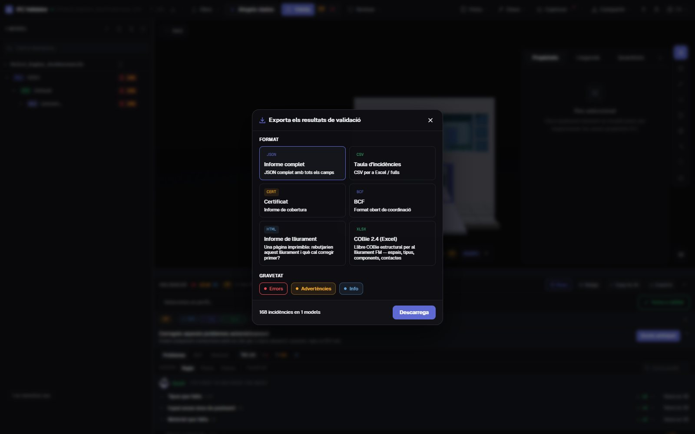

Control de qualitat IFC
nota i informe en 30 s
Arrossega un IFC i obtén el seu Health Score de 0 a 100 amb 44 regles de qualitat —GUID, estructura espacial, tipus, materials, conjunts de propietats, coordenades— amb els tres problemes que més punts resten primer. Després exporta un informe de lliurament imprimible, un certificat, BCF o COBie.
Revisar el model — gratis →Sense compte · Sense pujar res · Al teu navegador · Gratis
Què pots fer
Una revisió que pots lliurar
Una nota per al client, la llista completa per a l’autor i l’evidència per al CDE.
Health Score 0–100
Una nota de la qualitat de dades del model, ponderada per gravetat, amb la mitjana del sector per comparar.
Què corregir primer
Les regles que més punts resten, amb els punts que recuperaries, i un botó per veure’n els elements en 3D.
44 regles + IDS
GUID, jerarquia espacial, orfes, tipus, materials, Psets, unitats, coordenades, col·lisions, i qualsevol IDS de buildingSMART.
Informe de lliurament imprimible
Un informe HTML d’una pàgina (es rebutjaria aquest lliurament i què cal corregir) que s’imprimeix o es desa en PDF des del navegador.
Certificat, BCF, COBie
Un certificat de cobertura, incidències BCF 2.1 per a l’autor, CSV/JSON i un llibre COBie 2.4.
Sense pujar res
La revisió s’executa al navegador amb WebAssembly. Sota NDA, sense connexió i en qualsevol ordinador.
Captures

Preguntes
Preguntes freqüents
Què és un control de qualitat d’un model IFC?
Una revisió automàtica de la qualitat de dades d’un IFC: estructura, identificadors, classificació, propietats i coordenades. IFC Viewer Online la resumeix en un Health Score de 0 a 100 i llista cada problema amb l’element afectat.
Puc obtenir el resultat com a informe PDF?
Sí. Exporta l’«Informe de lliurament»: un informe HTML imprimible d’una pàgina amb la nota, el recompte de problemes i les prioritats. Obre’l i imprimeix-lo o «Desa com a PDF» des del navegador. També hi ha certificat JSON, CSV, BCF i COBie.
He de pujar el model IFC per revisar-lo?
No. A diferència dels serveis que exigeixen pujar el fitxer, aquí s’obre i es comprova al navegador; mai no s’envia a un servidor.
Què és una bona nota?
90–100 està a punt per lliurar, 75–89 serveix per a coordinació amb correccions menors, 50–74 necessita feina abans de lliurar i per sota de 50 hi ha problemes greus de dades.
És gratis?
Sí, per a qualsevol ús, també projectes comercials, sense compte i sense límit de mida de pagament.
Revisa el model abans que ho faci el teu client.
Health Score · Prioritats · Informe imprimible · BCF · COBie
Revisar el model — gratis →